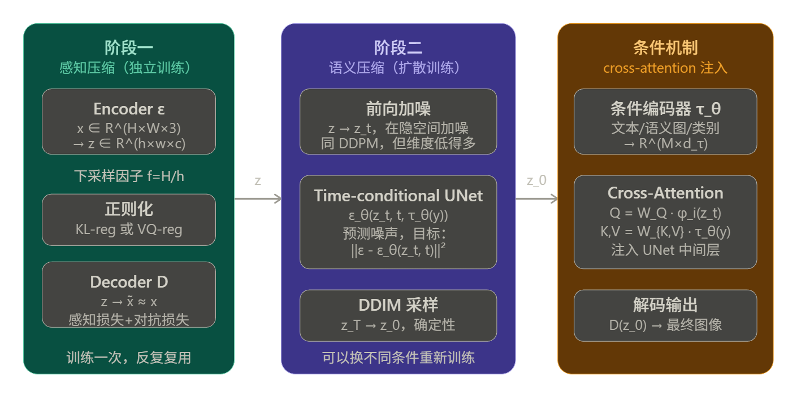
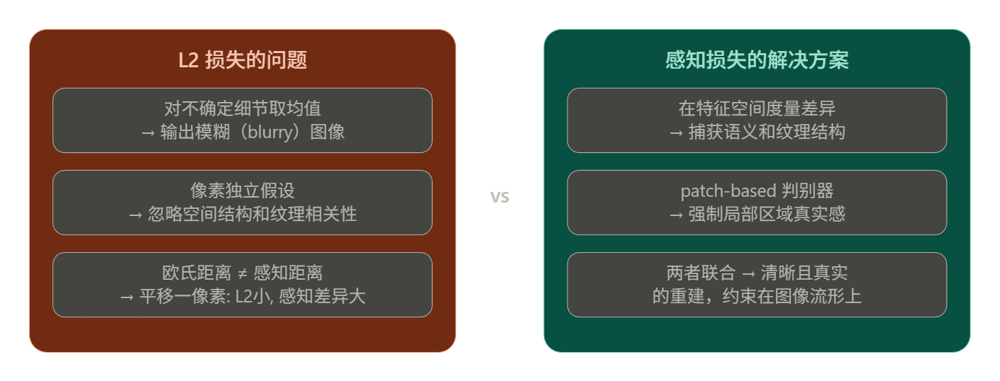
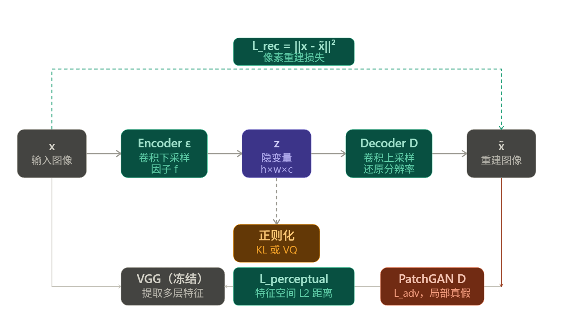
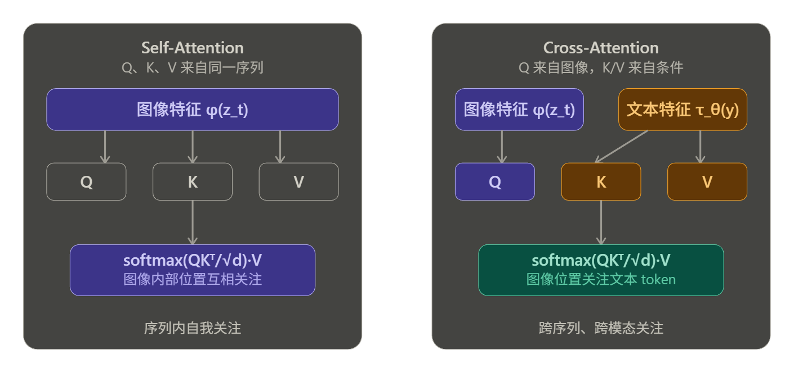
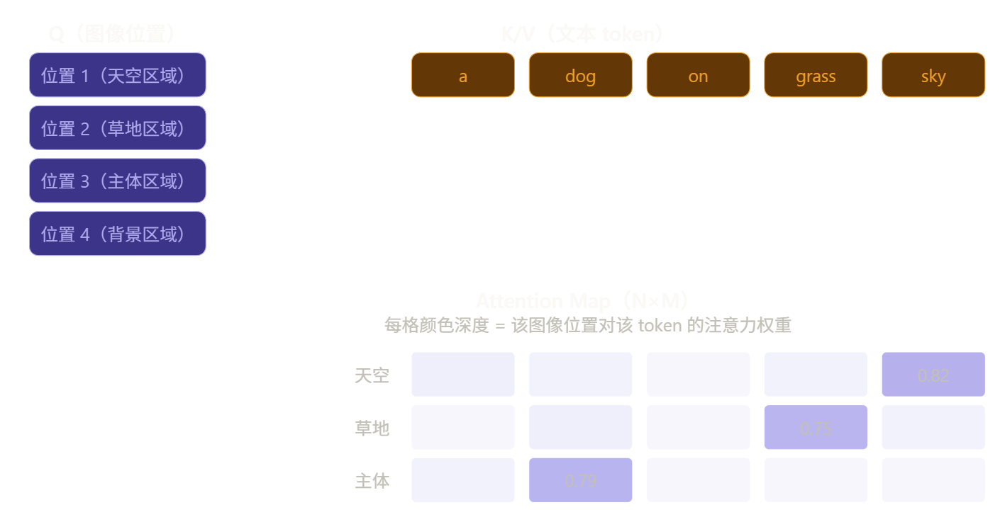
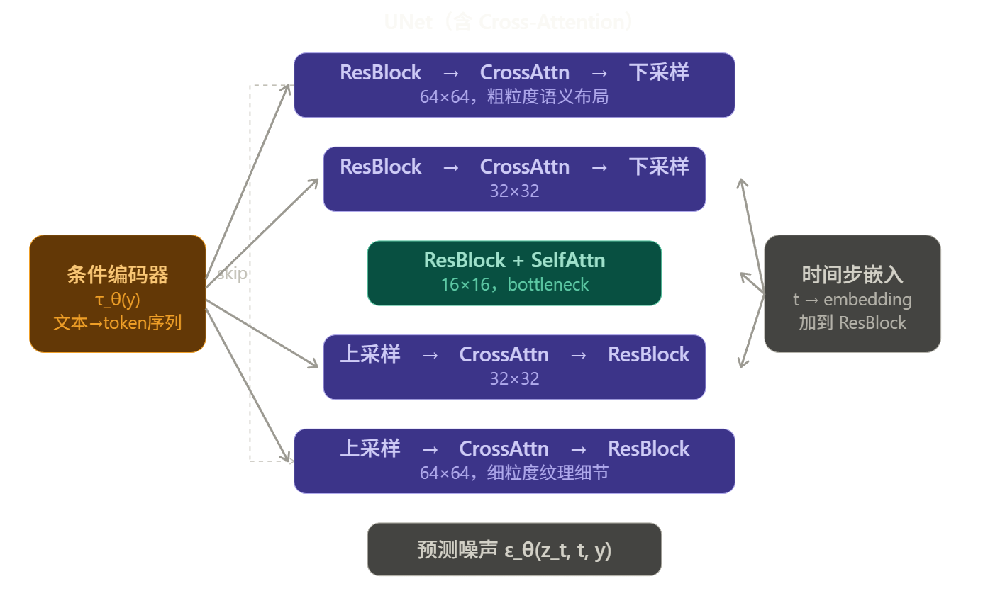
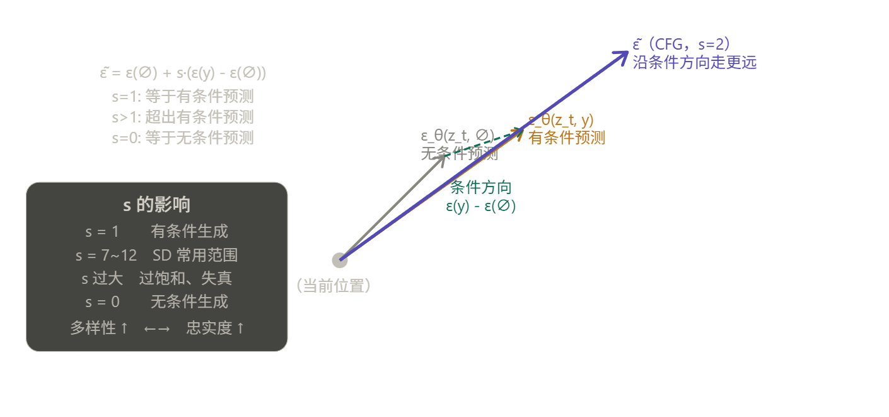
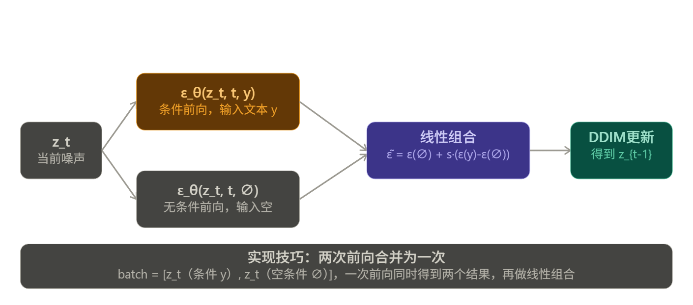

LDM
LDM 的核心思路非常清晰，整篇论文围绕一个核心问题展开：像素空间的扩散模型为什么贵，以及如何在不损失质量的前提下把计算量降下来。
根本动机
论文 Figure 2 提出了一个关键观察：对于任何基于似然的模型，学习过程可以分成两个阶段：
- 感知压缩（Perceptual Compression）：去除人眼不敏感的高频细节，这部分信息量大但语义价值低
- 语义压缩（Semantic Compression）：学习数据的真正语义和概念组合，这才是生成模型的核心任务
DDPM 在像素空间把这两件事混在一起做，导致大量计算浪费在第一阶段。LDM 的解决方案是：用 autoencoder 专门做感知压缩，扩散模型只做语义压缩。
整体架构
LDM 由三个相对独立的部分组成，理解它们的边界非常重要。

阶段一：感知压缩
Encoder \(\mathcal{E}\) 把图像 \(x \in \mathbb{R}^{H \times W \times 3}\) 压缩到 \(z \in \mathbb{R}^{h \times w \times c}\)，下采样因子 \(f = H/h\)。
训练目标是三项损失的组合：
- \(\mathcal{L}_{rec}\)：像素重建损失（L1/L2）
- \(\mathcal{L}_{perceptual}\)：感知损失，用预训练网络的特征空间度量，避免糊化
- \(\mathcal{L}_{adv}\)：patch-based 判别器对抗损失，强制局部真实感
感知压缩的完整推导
先理解为什么不能只用 L2 损失。这是整个设计的出发点。
纯像素损失的根本缺陷
假设用标准 VAE 的重建损失：
L2 损失对每个像素独立惩罚，等价于假设像素之间条件独立。这带来一个严重问题：当模型对某个细节不确定时（比如头发丝的走向），最优策略是输出所有可能结果的均值，即糊化。
更深层的原因是：自然图像的分布 \(p(x)\) 高度集中在一个低维流形上，L2 度量的是欧氏距离，而人眼感知的相似性是沿流形的距离。两张图像在 L2 意义上很近，感知上可能完全不同（比如整体平移一个像素）；反之亦然。

感知损失
感知损失（Perceptual Loss，来自 Zhang et al. 2018，即 LPIPS）的核心思想是：用预训练网络的中间特征作为度量空间。
设 \(\phi^{(l)}\) 为预训练网络（VGG）第 \(l\) 层的特征提取函数，则：
其中 \(C_l, H_l, W_l\) 是第 \(l\) 层特征图的通道数、高、宽，用于归一化。
为什么这样有效：VGG 在 ImageNet 上训练，其特征层已经学会了对人类视觉系统重要的结构——边缘、纹理、物体部件。在这个空间里距离近，意味着感知上相似。浅层特征捕获低级纹理，深层特征捕获高级语义，多层加权覆盖了整个感知层次。
对抗损失
仅有感知损失还不够，它仍然可能产生感知上合理但不够锐利的输出。LDM 引入 patch-based 判别器（来自 PatchGAN / VQGAN），对图像的局部小块判断真假，而不是对整张图。
判别器 \(D_{patch}\) 输出一个特征图，每个位置对应原图一个感受野区域的真假得分。对抗损失：
patch-based 的优势是：强制每个局部区域都要真实，而不是整体均值意义上的合理。这直接解决了模糊问题——模糊的 patch 很容易被判别器识别为假。
完整训练目标
三项损失联合训练 encoder \(\mathcal{E}\) 和 decoder \(\mathcal{D}\)：
加上正则化项（KL 或 VQ），完整目标为：

两种正则化
KL-reg（连续隐空间）
对隐变量 \(z = \mathcal{E}(x)\) 施加轻微 KL 惩罚：
encoder 输出均值 \(\mu\) 和方差 \(\sigma^2\)，通过重参数技巧采样 \(z = \mu + \sigma \odot \epsilon\)。KL 权重故意设得很小（"轻微惩罚"），目的不是让 \(z\) 严格服从标准正态，只是防止隐空间任意膨胀（variance collapse 或 posterior collapse）。
VQ-reg（离散隐空间）
在 decoder 内部嵌入向量量化层，把连续隐变量 \(z\) 映射到最近的 codebook 向量 \(z_q\)：
梯度通过 straight-through estimator 回传。VQ 的正则化效果来自量化本身——codebook 的容量有限，强迫 encoder 学习紧凑的离散表示。
论文为何最终选 VQ-reg 做主要实验：实验发现 VQ-reg 的 LDM 样本质量更高。直觉上，量化引入的信息瓶颈去除了更多感知上无关的细节，让扩散模型在更干净的隐空间里工作。
压缩比 \(f\) 对重建质量的影响
这是第一阶段最关键的超参数选择。论文 Figure 1 直接对比了不同 \(f\) 的重建质量（PSNR 和 R-FID）：
| 方法 | \(f\) | PSNR | R-FID |
|---|---|---|---|
| LDM（ours） | 4 | 27.4 | 0.58 |
| DALL-E | 8 | 22.8 | 32.01 |
| VQGAN | 16 | 19.9 | 4.98 |
\(f=4\) 时 PSNR 比 DALL-E（\(f=8\)）高 4.6 dB，R-FID 低两个数量级。这说明 LDM 的核心贡献之一是：不需要激进压缩也能让扩散模型在隐空间高效工作，因为 UNet 的卷积归纳偏置天然适合处理具有空间结构的隐变量。
和后续阶段的接口
第一阶段训练完成后，encoder \(\mathcal{E}\) 和 decoder \(\mathcal{D}\) 冻结权重，只作为固定的特征提取器和图像解码器使用。扩散模型完全在 \(z\) 空间中操作，从未看到像素。这个设计有一个重要含义：
同一个 autoencoder 可以支持多个不同的扩散模型——文生图模型、超分模型、补全模型可以共享同一个 \(\mathcal{E}\) 和 \(\mathcal{D}\)，只需重新训练扩散部分。这是 Stable Diffusion 生态里各种 LoRA、ControlNet 能够快速发展的基础条件之一。
Note
加上感知损失和GAN对抗损失之后，显存开销是不是很大？
因为VGG是一个已经预训练完成的特征提取网络，所以冻结参数，把中间值的l2存下来加到损失就行了，不需要在VGG上额外做计算图。然后GAN本身交替训练两个网络确实有比较大的开销，但是因为这里是局部Patch的GAN所以GAN网络体积比较小，总的来说可以接受。
补充一个细节让这个图景更完整：VGG 的梯度截断位置。
no_grad 包住的是 VGG 的前向计算，但损失函数 $| \phi^{(l)}(x) - \phi^{(l)}(\hat{x}) |^2 $ 里，$\hat{x} $ 是 VAE 输出的，这个 $\hat{x} $ 本身是有计算图的。所以梯度流向是：
VGG 内部没有梯度，但它充当了一个固定的非线性变换，把像素空间的差异映射到特征空间，然后这个特征空间里的 L2 距离对 $\hat{x} $ 的梯度正常流回 VAE。这是感知损失有效的关键——VGG 的非线性变换决定了"什么样的差异值得惩罚"，VAE 的梯度沿着这个方向更新。
GAN 那边也类似，第一阶段更新 VAE 时，$\hat{x} $ 送入 PatchGAN 得到评分，梯度从评分流回 $\hat{x} $ 再流回 VAE，PatchGAN 自身参数此时冻结不更新。
所以两个损失的共同模式是：外部网络定义了一个固定的评判标准，梯度通过 $\hat{x} $ 这个接口流回 VAE ，外部网络本身只是提供了一个更好的损失曲面形状。
阶段二：隐空间扩散
LDM在隐空间上做扩散的过程和DDPM，DDIM没有本质不同
LDM 在隐空间上做的扩散，训练目标和 DDPM 的形式完全一样，采样用 DDIM，唯一的区别是操作对象从像素 \(x\) 换成了隐变量 \(z\)：
两个公式除了输入从 \(x_t\) 换成 \(z_t\)，形式完全相同。加噪方式也一样：
其中 \(z_0 = \mathcal{E}(x)\) 是 encoder 的输出，训练时直接计算，不需要梯度回传到 encoder（因为 encoder 已经冻结）。
LDM 真正的贡献
不是扩散过程本身，而是在哪个空间做扩散这个设计决策带来的三个好处。
第一：计算量的压缩是二次方级别的
UNet 里的 self-attention 计算复杂度是 \(O((HW)^2)\)，对序列长度是二次方。从像素空间 \(256 \times 256\) 到隐空间 \(64 \times 64\)（\(f=4\)），序列长度从 65536 缩小到 4096，attention 的计算量变成原来的 \(\frac{1}{16}\)。这是 LDM 训练快得多的根本原因。
第二：隐空间的信噪比更好
像素空间里大量 bit 对应人眼不可感知的高频细节，扩散模型必须浪费容量去建模这些无意义的信息。隐空间经过感知压缩，保留的都是语义相关的结构，扩散模型可以把全部容量用在真正重要的地方。
第三：backbone 的归纳偏置匹配
\(z \in \mathbb{R}^{h \times w \times c}\) 保留了空间结构，UNet 的卷积层天然适合处理有空间相关性的数据。如果先把图像压成一维向量再做扩散（早期一些工作的做法），就丧失了卷积的归纳偏置优势。
Note
一个需要注意的工程细节
隐空间的数值范围需要校准。不同的 autoencoder 输出的 \(z\) 可能有不同的方差，如果方差过大，加噪调度（noise schedule）就不匹配了——原来为单位方差设计的 \(\bar{\alpha}_t\) 序列在方差很大的 \(z\) 上会表现异常。
LDM 的处理方式是对 \(z\) 按通道做标准化，使其接近单位方差，然后再喂给扩散模型。SD 系列在实现中也有这个 scaling factor，SD 1.x 里是 \(0.18215\)：
这个数字是从训练数据上统计 encoder 输出方差得到的，不是拍脑袋的超参数。
所以 LDM 的隐空间扩散部分可以用一句话概括：DDPM 的训练目标 + DDIM 的采样 + encoder 冻结后的 \(z\) 作为输入，核心创新不在扩散过程本身，而在于把扩散过程迁移到一个更合适的表示空间。
阶段三：cross-attention 条件机制
先建立直觉：cross-attention 解决的问题是如何让扩散模型在去噪时"参考"一段外部信息。没有条件机制时，UNet 只能做无条件生成；有了 cross-attention，文本、语义图、类别标签都可以自然地注入进来。
最直觉的条件注入方式是拼接（concatenation）：把条件信息和 \(z_t\) 直接在通道维度拼起来。这对空间对齐的条件有效，比如超分辨率里把低分辨率图像和噪声隐变量拼接，两者有明确的空间对应关系。
但对文本条件这就不行了。文本是一个变长的 token 序列，和图像的空间位置没有任何直接对应关系，强行拼接没有意义。需要一种能够跨模态、跨序列长度建立依赖关系的机制，这正是 attention 的强项。
Self-Attention 和 Cross-Attention 的区别
先理解 self-attention，再看 cross-attention 多了什么。
Self-attention 里 Q、K、V 全部来自同一个序列 \(X\)：
每个位置都在问"序列里哪些其他位置和我相关"，是序列内部的自我关注。
Cross-attention 里 Q 来自一个序列，K 和 V 来自另一个序列：
\(\phi_i(z_t)\) 是 UNet 第 \(i\) 层的图像特征，\(\tau_\theta(y)\) 是条件编码器的输出。图像特征提问（Q），文本特征回答（K 和 V）。每个图像位置都在问"文本里哪些 token 和我最相关"。

Attention 的计算过程
具体展开计算，设图像特征序列长度为 \(N\)（\(h \times w\) 个空间位置 flatten），文本 token 数为 \(M\)：
维度变化：
attention map 的第 \((i, j)\) 个元素表示图像第 \(i\) 个位置对文本第 \(j\) 个 token 的关注程度。这个矩阵是可视化的，实际上就是我们在 SD 生成图片时能看到的"哪个词控制了图像哪个区域"的来源。

注入在 UNet 的哪里
Cross-attention 不是在 UNet 外部做一次，而是插入到 UNet 每个分辨率层的 ResBlock 之后，形成 Spatial Transformer 结构：
残差连接保证即使 cross-attention 权重接近零，信息也能正常流过。在 UNet 的每个分辨率都注入，意味着条件信息在粗粒度（语义布局）和细粒度（纹理细节）上都有影响。

条件编码器 τ_θ 是什么
\(\tau_\theta\) 的具体结构取决于条件类型，论文里针对不同任务用了不同的编码器：
- 文生图：BERT tokenizer + Transformer encoder，输出 \(M \times d_\tau\) 的 token 序列
- 类别条件：简单的 embedding 层，类别标签 → 一个向量
- 语义图：另一个卷积网络，把语义分割图编码成特征
这个设计的优雅之处在于对条件类型完全开放，只要 \(\tau_\theta\) 能输出 \(M \times d_\tau\) 形状的序列，任何模态都可以插进来。后来的 ControlNet 就是利用这个接口，把深度图、边缘图等额外条件注入进去的。
训练目标的完整形式
加入条件后训练目标变成：
\(\tau_\theta\) 和 \(\epsilon_\theta\) 联合优化，条件编码器的梯度通过 cross-attention 的 K、V 矩阵反传回来。注意 autoencoder 的 \(\mathcal{E}\) 仍然冻结，只有扩散模型和条件编码器在这个阶段训练。
Classifier-Free Guidance（CFG）
先建立动机：有了 cross-attention 之后，模型能生成和文本相关的图像，但"相关"的程度往往不够强。生成的图像可能符合文本语义，但不够精确，细节上偏离描述。CFG 解决的就是如何在推理时增强条件的影响力。
Classifier Guidance
CFG 的前身是 Classifier Guidance（Dhariwal & Nichol 2021），理解它有助于看清 CFG 的动机。
Classifier Guidance 的思路是：训练一个额外的噪声分类器 \(p_\phi(y | x_t)\)，在每个去噪步骤里，用分类器对条件 \(y\) 的梯度来修正去噪方向：
\(s\) 是 guidance scale，越大条件影响越强。
问题：需要额外训练一个在噪声数据上工作的分类器，工程复杂；而且分类器的梯度质量直接影响生成质量，容易引入伪影。
CFG 的核心思想
CFG 完全不需要额外的分类器，只用同一个扩散模型的两次前向来构造 guidance。
关键观察来自贝叶斯公式。对条件生成分布的 score 做分解：
后验 = 先验 + 似然梯度。Classifier Guidance 直接估计第二项，CFG 则把两项都用扩散模型来估计：
其中 \(\varnothing\) 表示空条件（null condition）。这个公式的含义非常直观：
\(s > 1\) 时，沿着"条件和无条件的差异方向"走得更远，相当于放大了条件的影响。

训练时怎么做
CFG 的训练非常简单，只需要在原有训练流程里随机丢弃条件：
训练时以概率 \(p_{uncond}\)（通常 10%~20%）把条件 \(y\) 替换成空条件 \(\varnothing\)（一般是全零向量或空字符串的 embedding），其余时候正常用 \(y\) 训练：
这样同一个网络既学会了有条件去噪，也学会了无条件去噪，推理时直接做两次前向即可，不需要任何额外模型。
推理时的完整流程
每个去噪步骤里，模型做两次前向传播：
然后用 \(\tilde{\epsilon}\) 替代原本的 \(\epsilon_\theta\) 代入 DDIM 的更新公式做去噪。
实际实现里，两次前向通常合并成一次：把有条件和无条件的输入拼成 batch size 为 2 的 batch，一次前向同时得到两个结果，再做线性组合。这样推理开销是无 CFG 时的 2 倍，但通常认为值得。

CFG 的本质是什么
从信息论角度看，CFG 做的事情是锐化条件分布。
无条件模型学的是 \(p(x)\)，有条件模型学的是 \(p(x|y)\)。CFG 实际上在采样一个更尖锐的分布：
\(s > 1\) 时，这个分布比 \(p(x|y)\) 更集中在高概率区域，多样性下降，但对条件的忠实度上升。这就是 \(s\) 控制"多样性和忠实度之间的 tradeoff"的数学根据。
CFG 只在推理时起作用，训练时只是随机 dropout 条件，对训练目标没有任何改动。这是它如此简洁有效的原因——用训练时的一个小技巧换来了推理时对条件强度的完整控制权。